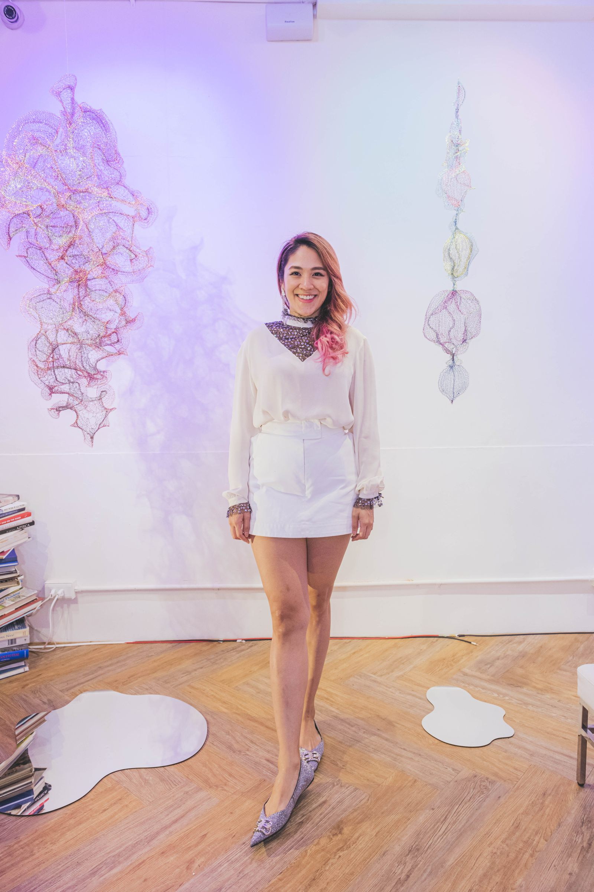
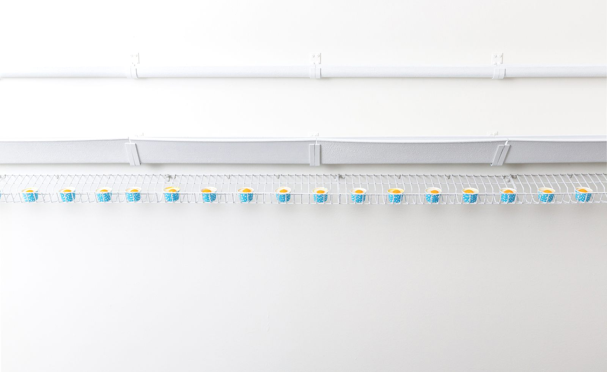
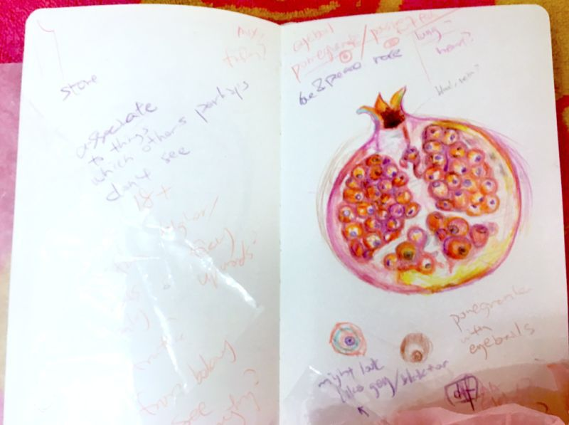
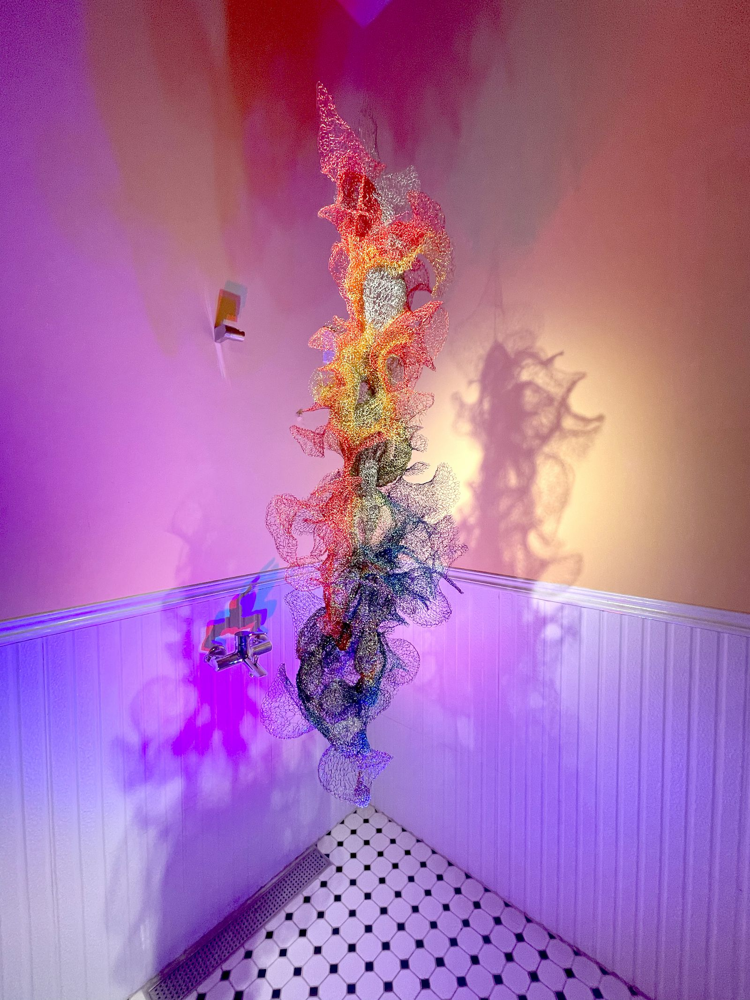
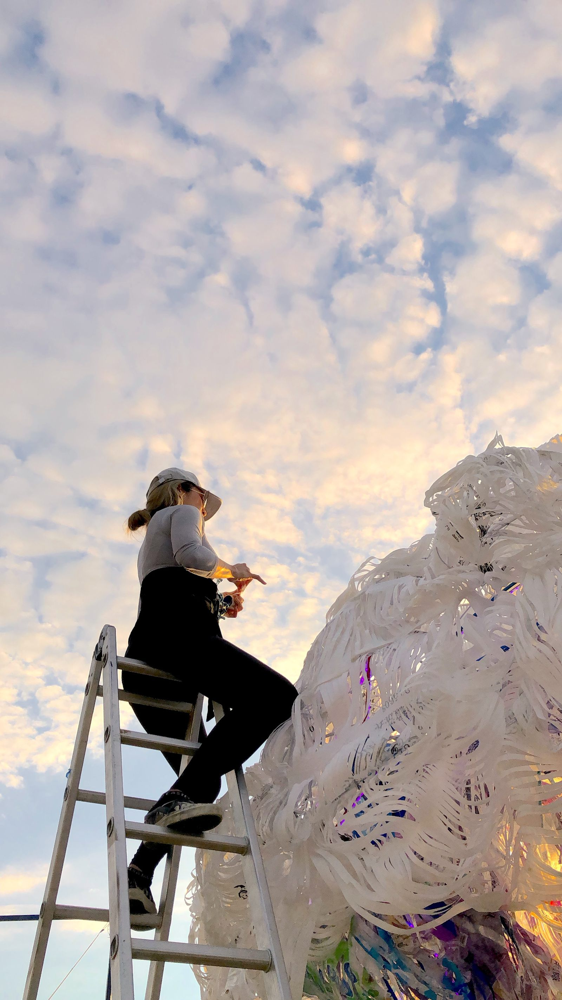

文 / NOWnews
文章轉仔自 / NOWnews今日新聞

甫於2020年得到屏東美展優選獎的Julia洪郁雯，是80後台灣新銳藝術家，出生於台灣，2016年畢業於瑞士日內瓦高等設計藝術學院主修當代藝術實作，兒時曾隨家人旅居香港，後於加拿安大略藝術設計大學讀設計與插畫，繼2019年屏東燈會亮點創作「星光潮來」、2020年個展「似識而非」之後，2021將再度推出「生與活的那些事兒」個展，邀請民眾一同欣賞藝術。
談起2019年大型戶外作品 「星光來潮」，曾經入選屏東燈會藝術家燈區，是與國內外21組藝術家一同展出，當時大獲好評。
洪郁雯在瑞士攻讀碩士學位期間，曾通過校內老師與校外策展人Jeanne Graff共同評審， 「L’Oranger - ?也蛋」作品於2017年日內瓦藝術博覽會(Art Gnève) Palexpo獲選展出，並在貴賓預覽日即獲得歐洲藏家及瑞士Arteva’s藝廊收藏。

▲2019年大型戶外作品 「星光來潮」入選屏東燈會藝術家燈區。
學成歸國後，洪郁雯曾經感受到藝術創作在台灣社會似乎不如其他行業受重視，以及旁人對「藝術家」身分的質疑，在注重實用價值的台灣社會中，許多事物被認定為「沒有用」 就是沒有價值，但自從看到了姚謙的紀錄片《一個人的收藏》 中曾有人提出「賣不出去的藝術品就是垃圾。」讓她再次思考， 藝術創作的「價值」與「用途」是什麼？
同時， 洪郁雯發現台灣的日常生活中充斥著塑膠袋，雖為人類帶來便利性，但也造成環境汙染。 於是，藝術家開始收集「消費後廢棄物」為創作媒材，從塑膠袋、衣服布料、鐵鋁罐到競選旗幟，經由巧手創作， 賦予新生命。
運用從小跟阿嬤學習的勾針編織，加上自創手法，以及從前學習過服裝設計的基礎，將人們生活中的廢棄物，轉化為一件件帶有生命靈性的有機雕塑，同時，對當今消費主義至上的社會提出疑問。

▲2017年 L’Oranger 聯展 蛋也？展場照。（圖／Julia洪郁雯授權提供）
從瑞士留學時期的真假食物系列，以人造假蛋和素食蛋的新聞為靈感，洪郁雯呈現了藝術家版本的人造蛋，外觀一模一樣，實際上分為可食用和非食用性，來表現這個人造現實的時代，我們所在的社會，處於真實和虛假之間，與根源分離，充滿有賣點的故事，這些故事超越了自⾝，在這個世界上存在著，他們或許不是百分之百真實， 但也絕非虛假，他們僅僅是⼈造的。
2018年「#」系列作品，洪郁雯以現代人對社交媒體的狂熱為發想，將回收塑膠袋製成結合食物和人體器官的視覺饗宴，來檢視人類對於包裝及追隨表面形象的著迷，如何因其迷思而消費和被消費，並對這個人造現實的時代提出疑問。

▲2018年「#」系列作品，我最要眼作品創作過程。（圖／Julia洪郁雯授權提供）
如今來到2021年，洪郁雯將再度舉辦個展《生與活的那些事兒》，結合藝術家近年的平面與立體各系列創作, 完整呈現給觀眾，在全球疫情肆虐的今天，身在台灣能夠自由移動的我們何其幸運，誠摯邀請大家2月24日起至3月9日，來新北市藝文中心觀看展覽，一起進入藝術家洪郁雯的奇幻藝術世界，進行一趟充滿想像力的微旅行。

▲2020年個展「似識而非」展場照。（圖／Julia洪郁雯授權提供）

▲2019年台灣燈會在屏東「星光潮來」作品創作過程。（圖／Julia洪郁雯授權提供）